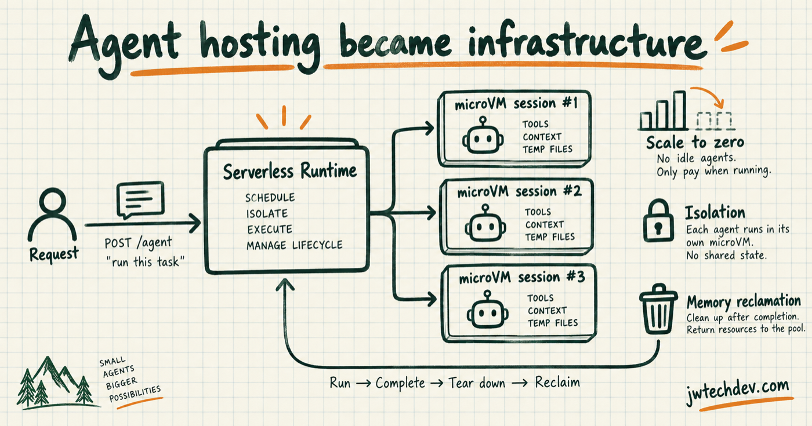

AgentCore Runtime GA: agent hosting became infrastructure
AWS is treating agent execution like a serverless workload with isolation, lifecycle management, resource reclamation, and measurable cold-start behavior.

Quick answer
AgentCore Runtime is evidence that production agents need a real execution substrate. A prompt is not a runtime. The system still needs to schedule work, isolate sessions, manage memory, tear down compute, scale, and expose operational evidence.
What AWS announced
On September 18, 2026, AWS announced a new generally available AgentCore Runtime built on serverless microVM compute. AWS says it provides elastic memory management, memory reclamation, hardware-enforced session isolation, no pre-provisioning, and scale-to-zero behavior.
AWS also reports P75 cold starts around 1.9 to 2.0 seconds for container images ranging from 200 MB to 2 GB, compared with 5.4 to 30 seconds in the previous runtime. Those numbers are AWS measurements, but the design direction is the useful signal.
Why microVM isolation matters
An agent session may hold temporary files, tool credentials, retrieved context, generated artifacts, and intermediate state. Session isolation reduces the risk that one execution can interfere with or observe another.
Isolation does not replace authorization. It protects the execution boundary. IAM, scoped tool credentials, data policy, and approval gates still determine what the isolated workload may do.
Cold starts and scale-to-zero are product decisions
Scale-to-zero is attractive for bursty agent workloads because teams do not pay for idle workers. The tradeoff is startup latency. A support copilot can tolerate a different cold-start target than a real-time voice agent or an automated incident responder.
The right question is not whether cold starts exist. It is whether the runtime behavior matches the user journey, timeout budget, concurrency profile, and cost model.
Architecture questions to ask
Ask what creates a session, what data enters it, where credentials come from, how temporary files are handled, when memory is reclaimed, how cancellation works, how tool calls are traced, what happens on retry, and how the system proves a session was isolated.
Also keep portability in view. A managed runtime can remove operational work, but your workflow contract, tool interfaces, trace schema, and evaluation suite should remain understandable outside one vendor.
Sources checked
Want the starter kit?
Learn the cloud layers that sit underneath production AI systems.
Get resources